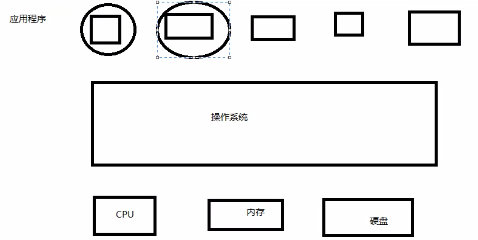
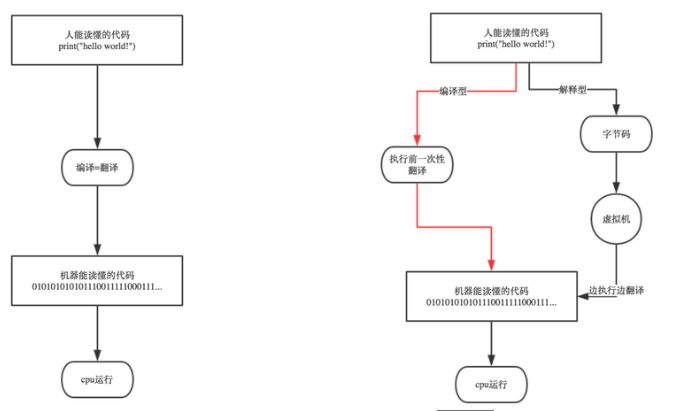
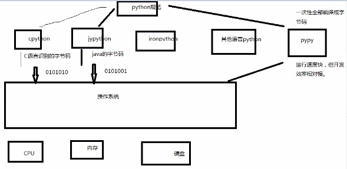
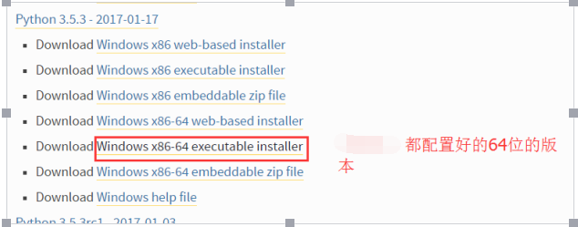
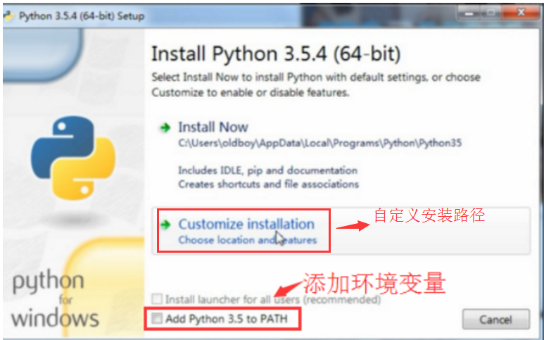
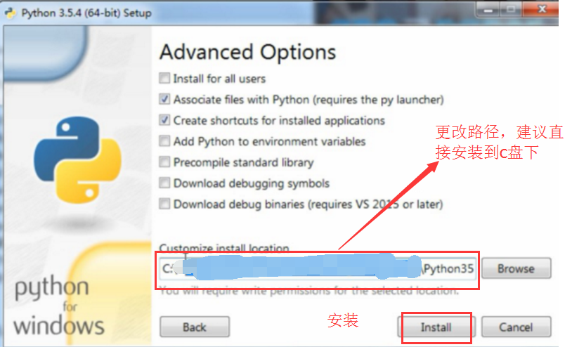

一、计算机基础
CPU：大脑，处理数据，计算
内存：临时储存数据，运行速度快，成本高，断电数据会消失；4G，8G,16G,32G
硬盘：1T，固态硬盘，机械硬盘；储存数据，文件，能长久保存
操作系统：打开QQ过程，点击快捷方式，打开硬盘中的.exe文件索引，操作系统将其加载到内存，CPU将内存中的QQ执行

二、python历史、环境、发展、种类
https://www.cnblogs.com/jin-xin/articles/7459977.html
太白金星博客
Python崇尚优美、清晰、简单；运维会python写脚本，市场还可以
In November 2014, it was announced that Python 2.7 would be supported until 2020, and reaffirmed that there would be no 2.8 release as users were expected to move to Python 3.4+ as soon as possible
规范统一化，
python2，python3的区别：
python2 源码不标准，混乱，重复代码太多
python3 统一标准，去除重复代码
编译型语言：一次性将所有程序编译成二进制；
缺点：1、开发效率低，重复编译；2、不能跨平台； 优点：运行速度快。 C、C++等
解释性语言：当程序执行时，一行一行的解释；
优点：开发效率高，可以跨平台； 缺点：运行速度慢 python、php等等

动态语言，静态语言
强类型、弱类型语言
python是一门动态解释性的强类型定义语言
python优缺点：见博客

三、python下载安装
windows下安装Python（自动添加环境变量）以3,.5版本的举例：
1. 官网下载：https://www.python.org/downloads/windows/
2. 选择版本。

3. 自动添加环境变量。

4. 更改完成。

5. 点击安装即可。